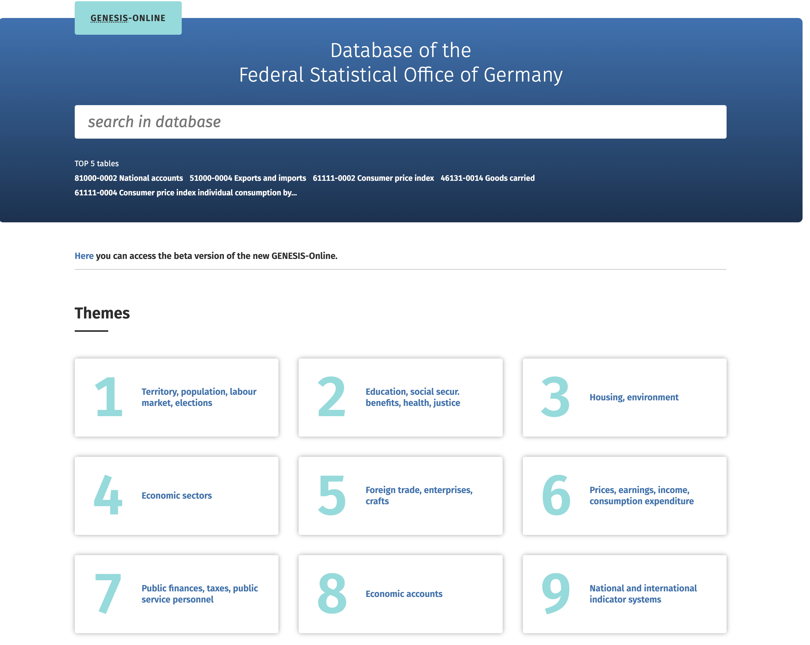

import pandas as pdImport unclean Excel data
Data from GENESIS-Online

- GENESIS-Online is the main database of the Federal Statistical Office
GENESIS-Online
Contains deeply structured results of official statistics.
You can use the database without registration.
All data are available free of charge.
We use this dataset as an example
Setup
Data
First data import
df_unclean = pd.read_excel('12211-9014_de.xlsx', sheet_name='12211-9014')- Take a look at the data
df_uncleanAdjusted data import
df = pd.read_excel('12211-9014_de.xlsx',
sheet_name='12211-9014',
skiprows=[0,1,2,3],
skipfooter=20,
na_values='/',
thousands='.',
decimal=','
)View data
df.head()df.tail()Rename columns
df = df.rename(columns={
'Unnamed: 0': 'Jahr',
'Unnamed: 1': 'Geschlecht',
'Unnamed: 2': 'Bundesland' }
)
df.head()Fill up columns
df['Jahr'] = 2019df['Geschlecht'] = df['Geschlecht'].fillna(method='ffill')
df.head()Data format
df.info()Convert categorical data
LIST_CAT = df.columns[1:3].tolist()
LIST_CATfor i in LIST_CAT:
df[i] = df[i].astype('category')Convert numerical data
LIST_INT = df.columns[3:].tolist()
LIST_INTfor i in LIST_INT:
df[i] = df[i].astype('Int64')Take a look at the data
dfCreate new dataframe with subgroub
Create new dataframe
- Let’s assume we only want to keep the total number and don’t need to differentiate between sex
df_total = df[df['Geschlecht'] == 'Insgesamt']
df_total.head()Save new dataframe
- We can drop the variable “Geschlecht”
df_total = df_total.drop(columns=['Geschlecht'])- Save data
df_total.to_excel('12211-9014_de_clean.xlsx', index=False)